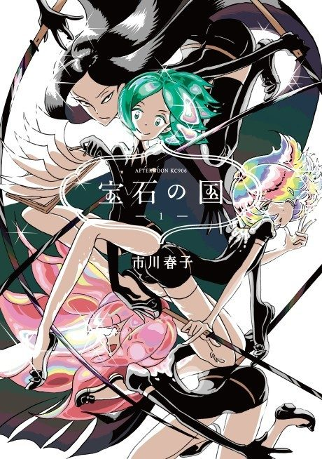

Anime
Anime
Manga2017 · Action, Drama, Fantasy
Land of the Lustrous
宝石の国
AniList8.3
Animeter—
Episodes12 ep
MangaCh. 30
Anime finished. Where does the manga pick up?
Start at Chapter30
The anime adapts up to around Chapter 32 but rearranges and skips content. Start reading from Chapter 30 (Volume 4).
132120 end
Season 1Start reading here